CS184/284A Spring 2025 Homework 1 Write-Up
Link to webpage: (TODO) git@github.com:cal-cs184-student/hw-webpages-ishan.git
Link to GitHub repository: https://github.com/cal-cs184-student/sp25-hw1-beepboopblopblorpbop
Overview
In this homework, we explored key aspects of the rasterization pipeline. Specifically, we examined efficient methods for rasterizing triangles and techniques for mitigating aliasing effects along triangle edges, such as supersampling. We also studied transformations, texture mapping, and approaches for handling both texture magnification and minification.
This homework provided me with a deeper understanding of the rasterization pipeline and the various sampling techniques that help create a smoother transition from the discrete to the continuous world.
Task 1: Drawing Single-Color Triangles
The code rasterizes a triangle by first computing the bounding box of the triangle in pixel space, by using the min and max x and y coordinates of the vertices. It then loops over every pixel within the bounding box. For each pixel, the center is determined by adding 0.5 to the integer pixel coordinates, ensuring that the sample lies in the middle of the pixel.
We then check whether the sampled pixel coordinate lies inside the triangle. To do this, we compute the edge vectors and the corresponding normal vectors. The winding order of the triangle is determined using the cross product of two subsequent edges. If the cross product is negative, the winding order is clockwise, and the normal vectors must be negated. To check whether a point is inside the triangle, we take the dot product between the normal vector of an edge and the vector from the starting edge to the sampled point. If the dot product is less than 0 for any edge, the point is outside the triangle.
Each pixel in the bounding box is processed with a constant number of operations independent of triangle size (computing the sample edges and normals, performing three dot products, and a cross product). No extra pixels outside the bounding box are checked; thus, the algorithm is no worse than one that checks each sample within the bounding box of the triangle.
Task 2: Supersampling
Supersampling is a technique where multiple spatial points within a pixel are sampled and averaged to determine the final pixel value. This process is useful because it helps smooth out high-frequency signals in the original image. For example, sharp edges or lines that produce jagged artifacts (aliasing) can be softened through supersampling, resulting in a smoother transition between colors near edges rather than harsh, jagged steps.
To implement supersampling, I used the sample_buffer to store multiple samples per pixel before resolving them to the framebuffer. Each time the sample buffer was reset or resized, I ensured it accounted for the total number of samples per pixel (width × height × sample_rate), including in functions like set_sample_rate and set_framebuffer_target.
I also modified resolve_to_framebuffer, where instead of simply copying the sample buffer to the framebuffer, I averaged all the color samples corresponding to each pixel. Additionally, in rasterize_triangle, I modified the iteration process to check every sampled point within a pixel, rather than just a single pixel center, and determined whether it was inside the triangle.
For fill_pixel (used for rendering lines), I ensured that every sample point within a pixel was set to the specified color instead of updating only a single entry, aligning with the new sample buffer structure.
My implementation allowed me to effectively antialias triangles by reducing jagged edges. By averaging multiple subpixel samples, the colors transition more smoothly across edges, instead of jaggedness and weird artifacts caused by aliasing (such as disconnected parts).
|
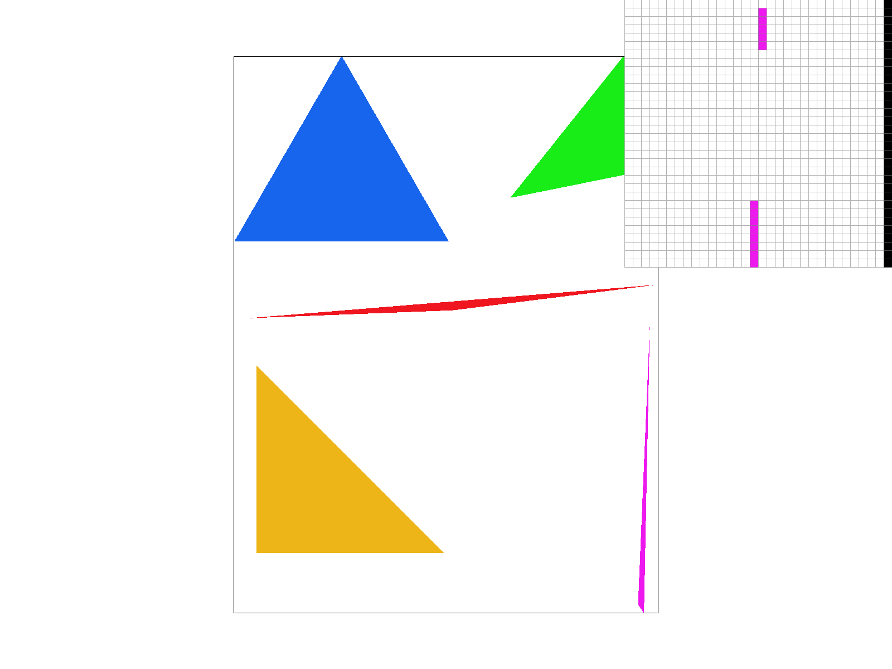
|
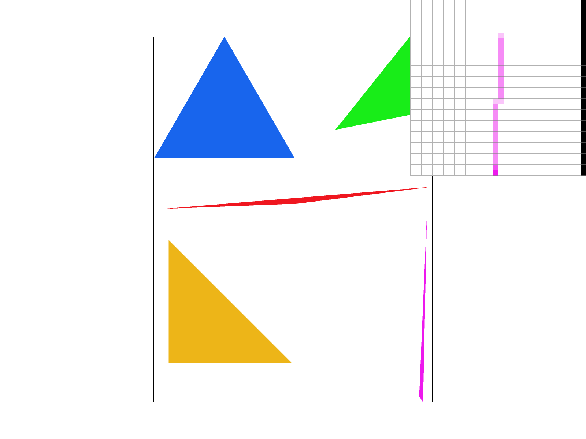
|
|
|
|
Task 3: Transforms
The figure below is a robot that is supposed to be running. To implement this, I had to rotate the legs by about 30 degrees and rotate each component of the left differently. I also had to rotate the torso slightly, move the head, and rotate and translate the arms to be in the correct place.
Task 4: Barycentric coordinates
Barycentric coordinates provide a convenient way to parameterize a point inside a triangle in terms of its vertices. Any point within the triangle can be expressed as a weighted average of the vertices, where the coordinates \(\alpha\), \(\beta\), and \(\gamma\) act as the weighting coefficients. Specifically, \(\alpha\) corresponds to the weight of vertex \(A\), \(\beta\) to vertex \(B\), and \(\gamma\) to vertex \(C\).
To compute a barycentric coordinate, such as \(\alpha\), one can take the distance from the point to the opposite edge (edge \(BC\)) and divide it by the distance from \(A\) to \(BC\). These distances can be efficiently determined using the cross product. Once computed, barycentric coordinates can be used for interpolation across the triangle, as illustrated in Figure (b).
|
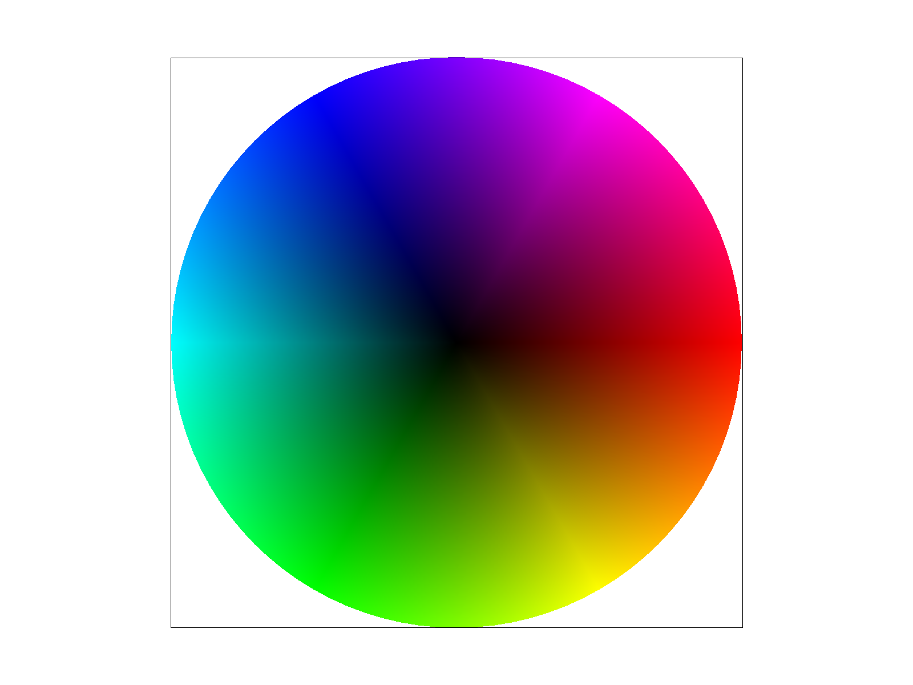
|
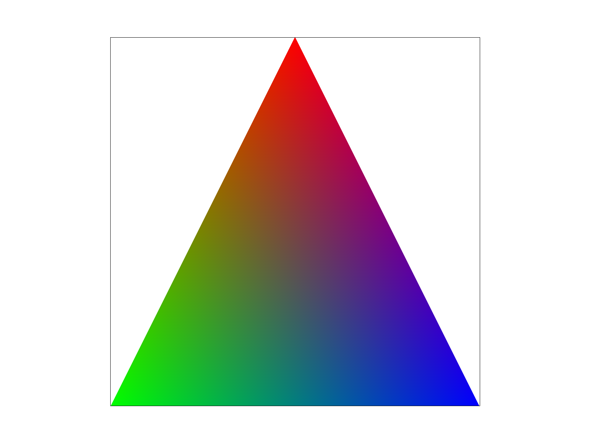
|
Task 5: "Pixel sampling" for texture mapping
|
|
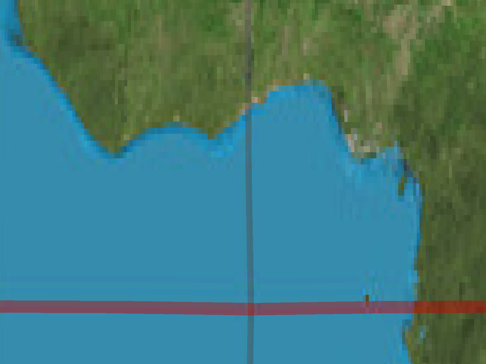
|
|
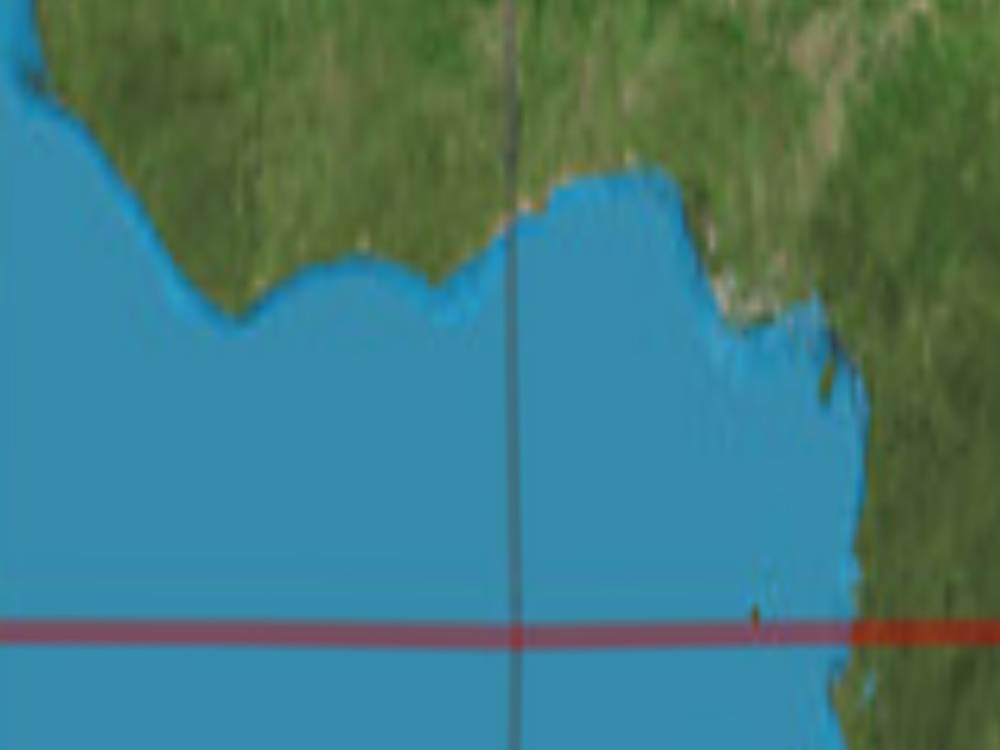
|

|
Pixel sampling determines the color of a pixel based on the UV coordinates of a texture map. The process starts with discrete pixel space being sampled and then converted into continuous pixel space. From there, continuous pixel space is mapped to continuous texel space using UV coordinates. Finally, in continuous texel space, the corresponding color is sampled from the discrete texel map to determine the final pixel color.
One way to do this is nearest sampling, where you take the continuous pixel coordinate, find the nearest discrete texel coordinate, and use its color for the UV-mapped point. However, when an image is magnified—meaning each texel corresponds to many more pixels (texture magnification)—nearest sampling can make the image look pixelated and chunky. This happens because many pixels will share the exact same color, as they all map to the same texel.
Bilinear interpolation helps resolve this by allowing colors to transition smoothly between texels. Instead of selecting just one texel, bilinear interpolation takes a square of four neighboring texels and interpolates their values. It first interpolates between the top two texels and between the bottom two based on the texel’s U coordinate. Then, it interpolates between the two results using the V coordinate to compute the final color. This ensures that even if multiple pixels map to the same texel, the color varies smoothly as pixels move closer to or farther from a texel.
The difference becomes more and more noticeable as the number of pixels per texel increases (more texture magnification). This is because when more and more pixels correspond to the same texel, you will get a "blocky" look where a big block of pixels are the same color. Bilinear interpolations solves this by having the pixels vary smoothly based on their distance from 4 different texels. Bilinear interpolation doesn't help much for texture minification, however. Supersampling and level mapping are good ways of dealing with this opposite problem.
Task 6: "Level Sampling" with mipmaps for texture mapping
Level sampling is a technique used in texture mapping to choose the appropriate resolution of a texture for a given pixel. When a pixel covers many texels, this is called minification. In this scenario, we are directly sampling a high-frequency full-resolution texture, which can lead to aliasing. Supersampling can alleviate this; however, it can be computationally expensive since we have to sample many more points per pixel than we usually do. Instead, we prefilter the texture by averaging texels into lower-resolution versions called mipmaps. Each mipmap level represents the texture at a different resolution, and by selecting the appropriate level, we obtain a color value that effectively averages over many texels, thereby reducing aliasing. We can choose which level to choose based on which pixel we are at, so that pixels that cover more texels get a lower resolution level of the mipmap. We can do this by perturbing our pixel coordinates in the unit x and y directions, and seeing the number of textures this unit perturbation spans. Additionally, we can use the calculated floating point number corresponding to our mipmap level to interpolate between the colors of different mipmap levels.
We complete level sampling in our interpolation using the following steps:
- Barycentric Interpolation
InRasterizerImp::rasterize_textured_triangle:
For each sample inside a textured triangle, we first determine if it lies within the triangle. If it does, we compute its barycentric coordinates to interpolate the UV coordinates from the triangle’s vertices. This ensures that the texture coordinates are smoothly mapped across the surface of the triangle. - Computing Differentials
InRasterizerImp::rasterize_textured_triangle:
In addition to computing the UV coordinates for the sampled pixel, we also compute the UV coordinates at nearby positions (specifically at \((x+1, y)\) and \((x, y+1)\)). This allows us to determine the differentials in UV space, which are given byp_dx_uv - p_uvandp_dy_uv - p_uv. These will be used byTexture::get_levellater. - Determining the MipMap Level
InTexture::get_level:
If level sampling is enabled (i.e.,lsm ≠ L_ZERO),Texture::samplecallsTexture::get_level. This function computes the mipmap level by estimating how many texels a pixel spans. The maximum of the scaled differential norms provides this estimate. The mipmap level is then computed as:
\(\lambda = \log_2 (\max(\|\Delta_{dx}\|, \|\Delta_{dy}\|))\)
where \(\|\Delta_{dx}\|\) and\(\|\Delta_{dy}\|\) are the scaled differential norms, scaled by the texture’s width and height to convert them into texel space. - Selecting the Level Sampling Mode
InTexture::sample:
After computing the mipmap level,Texture::sampledetermines how to use it based on the selected level sampling method:- L_ZERO: Always sample from the zero-th mipmap level (full resolution).
- L_NEAREST: Round the computed mipmap level to the nearest integer and sample from that level.
- L_LINEAR: Linearly interpolate between the two adjacent mipmap levels using the fractional part of the computed level.
- Pixel Sampling
InTexture::sample,Texture::sample_nearest, andTexture::sample_bilinear:
Finally, the chosen mipmap level is passed to the pixel sampling function. Depending on the selected pixel sampling method:- If
psm == P_NEAREST,Texture::sample_nearestis used, which rounds UV coordinates to the nearest texel. - If
psm == P_LINEAR,Texture::sample_bilinearis used, which interpolates between four neighboring texels for smoother results.
- If
Trade-offs of Different Sampling Methods:
- Pixel Sampling (e.g., Bilinear Interpolation):
- Speed: Fast, as it typically involves sampling four texels per pixel.
- Memory Usage: Minimal additional memory overhead.
- Antialiasing: Works well for magnification (when a few texels cover many pixels) by providing smooth transitions, but it can struggle with aliasing during minification.
- Level Sampling (MipMaps):
- Speed: Very efficient, because it reduces the number of texels processed per pixel when many texels map to a single pixel.
- Memory Usage: Requires additional memory to store the mipmap levels (roughly 1-2x extra compared to the full-resolution texture), but this isn't that much.
- Antialiasing: Good for handling minification, as the prefiltered mipmaps minimize high-frequency details and aliasing artifacts.
- Supersampling:
- Speed: Computationally expensive because it involves sampling many more points per pixel (e.g., 16 times more samples).
- Memory Usage: Increases memory consumption and bandwidth due to the higher number of samples.
- Antialiasing: Offers high-quality antialiasing by averaging many samples, but at a significant performance cost.
Level sampling with mipmaps strikes a good balance between performance and image quality. It is particularly effective for texture minification, where it reduces aliasing with only a modest increase in memory usage. Below we provide some pngs that show the effects of the different sampling.
|
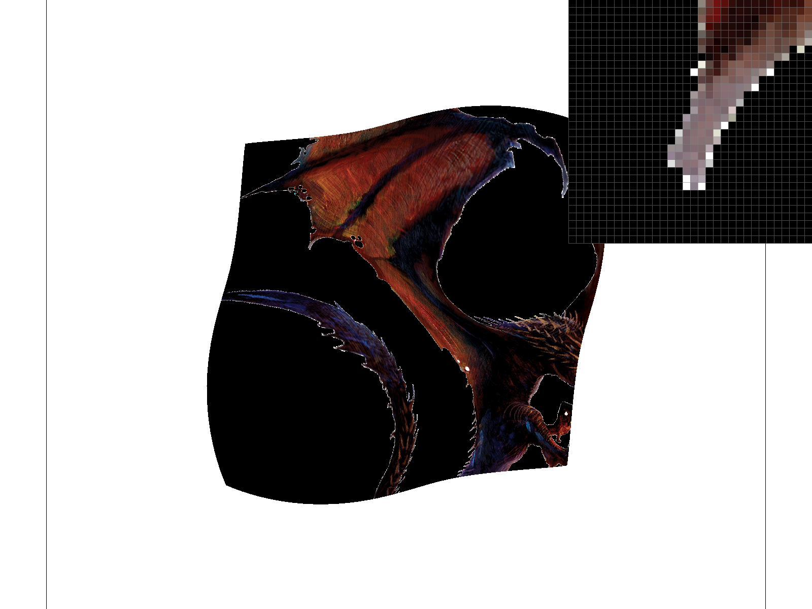
|
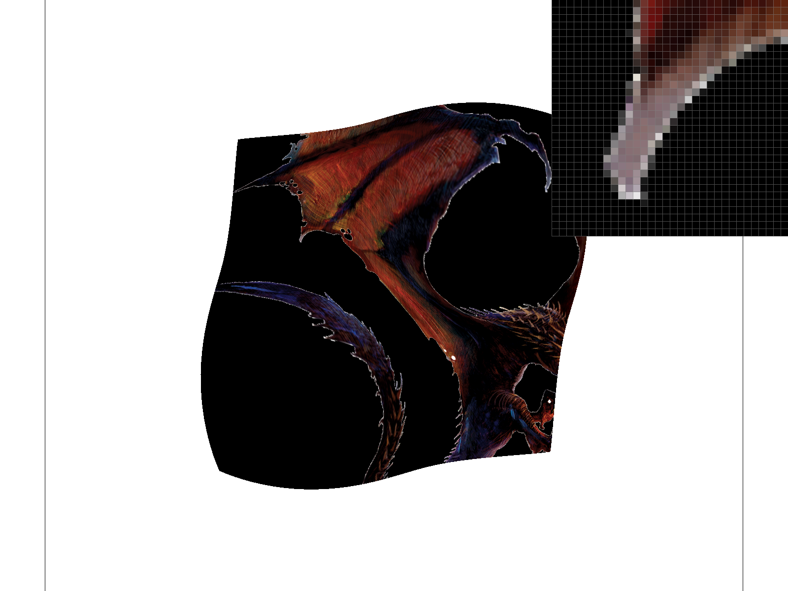
|
|
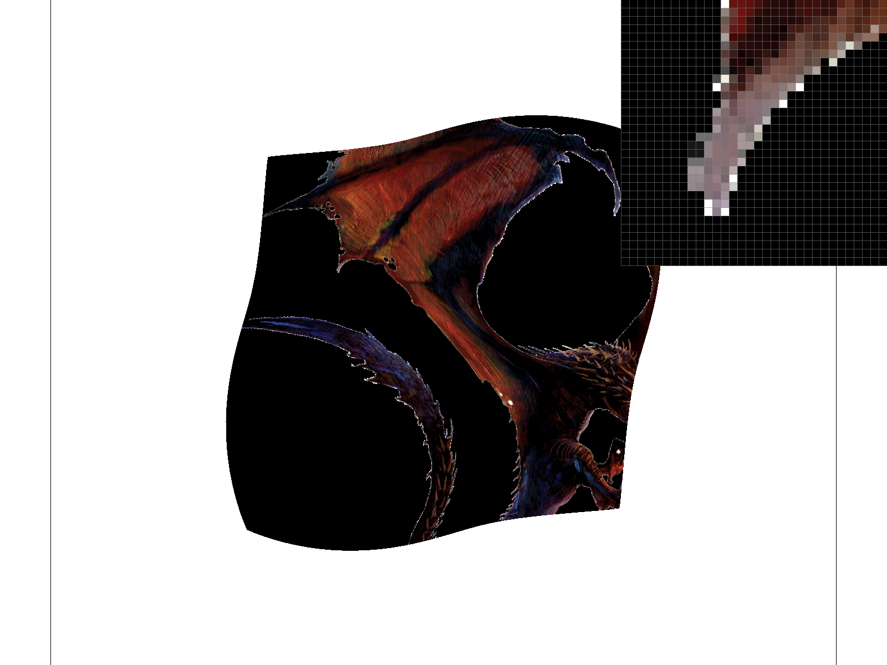
|
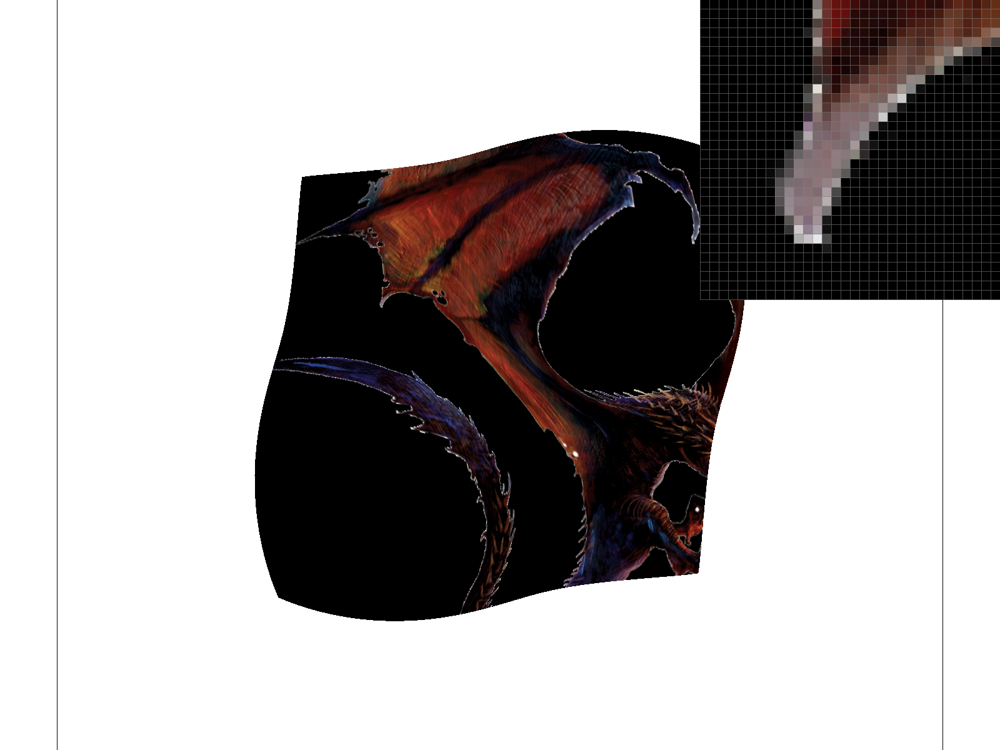
|
|
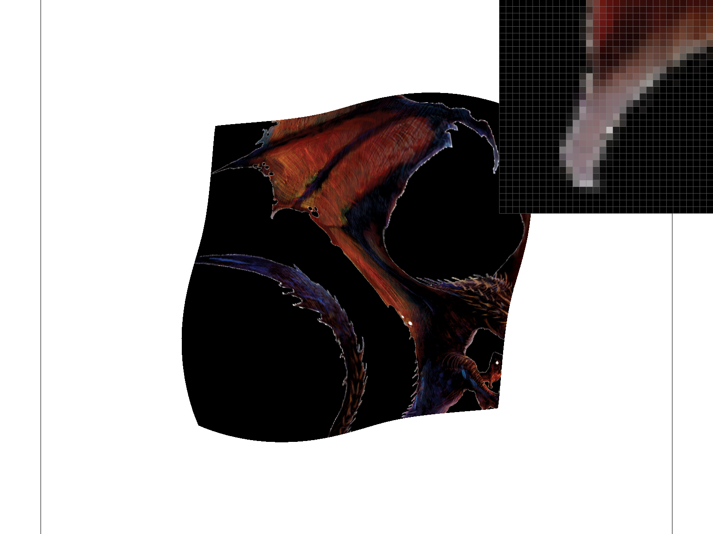
|
|